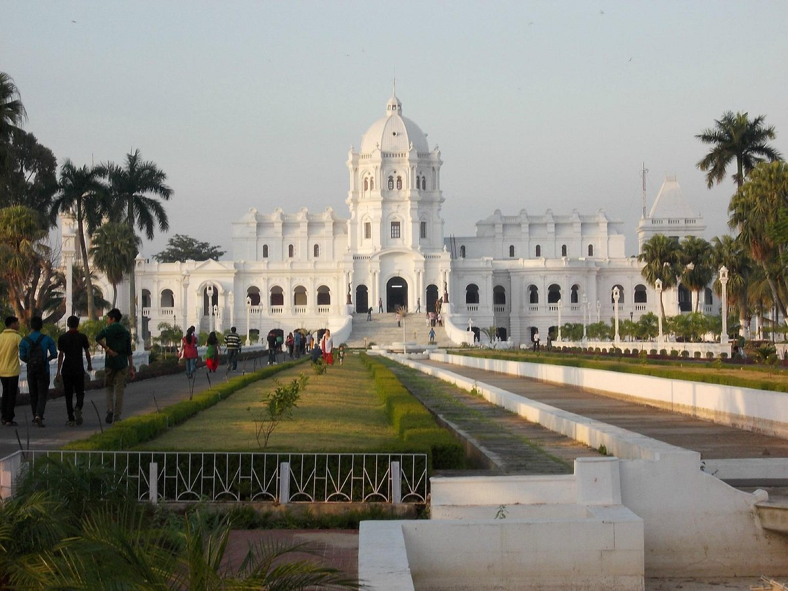

Document
Tripura Tourism Department
Home|
Destination|
Online booking|
Accommodation|
Contact Us
Tripura is a cultural reservoir among all the northeastern states of India. Heritage and historical sites, temples going back hundreds of years, wildlife destinations and a thriving arts and crafts industry, these are the most popular tourism attractions in Tripura. Those looking for biodiversity hotspots during their Tripura holidays will not be disappointed, this state has plenty of those. Tripura is one of those travel destinations in India that attract families, friends, couples and solo travellers.
Location-Agartala

BEST TIME TO VISIT TRIPURA:
October to February are the best months to visit Tripura.
WHY VISIT TRIPURA?
You should visit Tripura for its landscape, culture, cuisine, palaces, heritage sites, sightseeing, viewpoints, temples, archaeological sites, wildlife, boating, waterfalls, handicrafts, birding, lakes and landscape.
TEMPERATURE:
25°C to 35°C
Summer
March to June.
22°C to 33°C
Monsoon
June to Septembe.
15°C to 20°C
Winter
November to March.